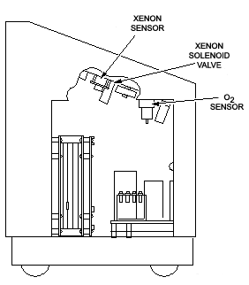

Operating Documentation
Direction 5112972-800, Rev# 2
CT Planned Maintenance Procedures
Operating Documentation |
| Required Persons | Preliminary Reqs | Procedure | Finalization |
|---|---|---|---|
| 1 | Timing Not Applicable | 25 mins | Timing Not Applicable |
Procedure Effectivity:
| Assembly: | XENON BLOOD FLOW |
| Subassembly: | |
| Purpose: | Replace Xenon Sensor |
| Last Revised: | July 1995 |
| Item | Qty | Effectivity | Part# | Manufacturer | |
|---|---|---|---|---|---|
| Standard FE Toolkit | 1 | - | - | - | |
| Item | Qty | Effectivity | Part# | Manufacturer | |
|---|---|---|---|---|---|
| Oxygen sensor | 1 (if required) | - | 46-237517G1 | - | |
| Xenon sensor | 1 (if required) | - | 46-237580G1 | - | |
Open left side cover. The oxygen sensor is a chemical sensor with a six month shelf life. If you do not use the Xenon box for six months, it is probably going to fail. It can be replaced in less than a minute. Refer to Illustration 1.
Illustration 1: Xenon and Oxygen Sensors

Pull the plug.
Unscrew the sensor.
Install the new sensor.
Insert the plug.
The sensor calibrates automatically on power up. A spare can be kept on–site as long as it is in its sealed bag. Once it is opened, you have six months.
Open left side cover. Refer to Illustration 1.
Replace the sensor.
Calibrate sensor per Oxygen Sensor , Step 6. The Xenon sensor has three failure symptoms. The most obvious is if your readings are -100% or 100% . Call service. If the readings go above 33%, the sensor needs to be calibrated or replaced. If it requires calibration every few days, replace it. If the values are low, you must do some checking first. Air leaks at the patient mask, hose or sample hose will cause low readings ( so will partial blockage of these hoses). A leaking bypass valve or a bad gas mixture in the bag will cause low readings. A wrong Xenon pump flow rate or the amplifiers on the circuit board can also cause low readings. The majority of the problems for this symptom are air leaks. Even a hairline crack in the sample hose can cause a major change in the percent of Xenon sensed.
No finalization required.